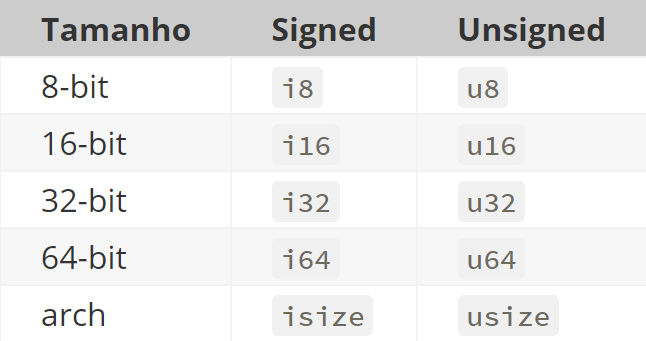
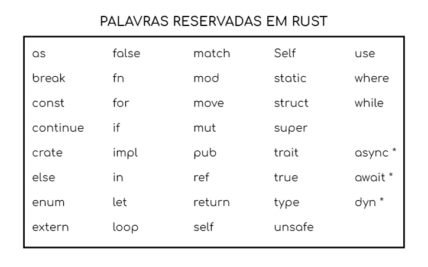

Construtores
Variáveis e Mutabilidade
Em Rust, as variáveis são imutáveis por padrão. Isso permite que o código seja mais seguro. Porém, o desenvolvedor pode declarar as variáveis como mutáveis, explicitamente, caso deseje.
fn main () {
let x = 5; // variável imutável
println!("O valor de x é: {}", x);
let mut y = 10; // variável mutável
y = 20; // Se tentarmos aplicar essa operação em x, teremos o erro: "cannot assign twice to immutable variable"
println!("O valor de y é: {}", y);
}
Tipos primitivos
- Inteiro : Em Rust, os inteiros (int) podem, em sua declaração, indicar o valor associado com base em seu tamanho. Além disso, pode ser declarado como signed (positivos e negativos) ou unsigned (apenas positivos).

-
Flutuante: Números com casas decimais. Possui dois tipos primitivos que podem ser utilizados: f32 (32 bits) e f64 (64 bits)
-
Booleano: Indica verdadeiro ou falso.
-
Caractere: O char é o tipo mais primitivo da linguagem. Referenciado por aspas simples.
Tipos compostos
- Tuplas: Forma de agrupar vários valores de tipos diferentes em uma só variável
fn main () {
let tupla: (f32, f64, u8) = (30.0, 3.5, 1); // a tupla pode armazenar diferentes tipos primitivos
let (a, b, c) = tupla; // com esse método, atribuímos a,b e c aos valores da tupla
}
- Matriz: Forma de ter vários valores em uma coleção com tipo único.
fn main () {
let matriz = [1, 2, 3, 4, 5]; // os dados devem ser do mesmo tipo
let primeiro = matriz[0]; // acesso a valores da matriz
}
Operadores
Rust oferece operadores relacionais, lógicos e aritméticos, similares aos de outras linguagens como C, C++ e Java:
- Relacionais: ==, !=, >, <, >=, <=
- Lógicos: &&, ||, !
- Aritméticos: +, -, *, /, %
Comandos
Os comandos de controle de fluxo em Rust são semelhantes aos de C e Java, incluindo:
- Condicionais: if, else, else if
- Iteração: for, while, loop
- Controle de fluxo: break, continue, return, match
Palavras reservadas
Palavras que podem ser utilizadas apenas em seu contexto correto. Não podem ser utilizadas como nomes de itens, variáveis, parâmetros e etc.

Modificadores de acesso
- pub(in path): faz o item visível dentro do path fornecido. path deve ser um módulo ancestral deste item
- pub(crate): torna o item visível dentro da caixa atual
- pub(super): torna o item visível para o módulo pai. Equivale a pub(in super).
- pub(self): torna o item visível para o módulo atual. Equivale a pub(in self).
struct PrivateStruct { // declaração padrão -> privado
field: i32,
}
pub struct PublicStruct { // declaração alterada para pública
pub field: i32,
}
Tratamento de Erros
Em Rust, não há null nem exceptions e separa os erros em duas categorias:
- Recuperável: programa consegue tratar e continuar funcionando, podendo ser retornado pela função de onde ocorreu. Funções com erros recuperáveis retornam uma enumeração Result que referencia dois casos: um deles é o tipo do retorno em caso de sucesso e o outro, em caso de fracasso.
- Irrecuperável: o programa não consegue tratar e deve encerrar sua execução imediatamente.
A verificação de erros em Rust é fortemente incentivada por meio do uso do operador match, que permite ao desenvolvedor lidar de maneira abrangente com os resultados:
match divide(10.0, 2.0) {
Ok(resultado) => println!("Resultado: {}", resultado),
Err(erro) => println!("Erro: {}", erro),
}
Dessa forma, a linguagem de programação garante que os desenvolvedores considerem todas as possíveis situações de erro.